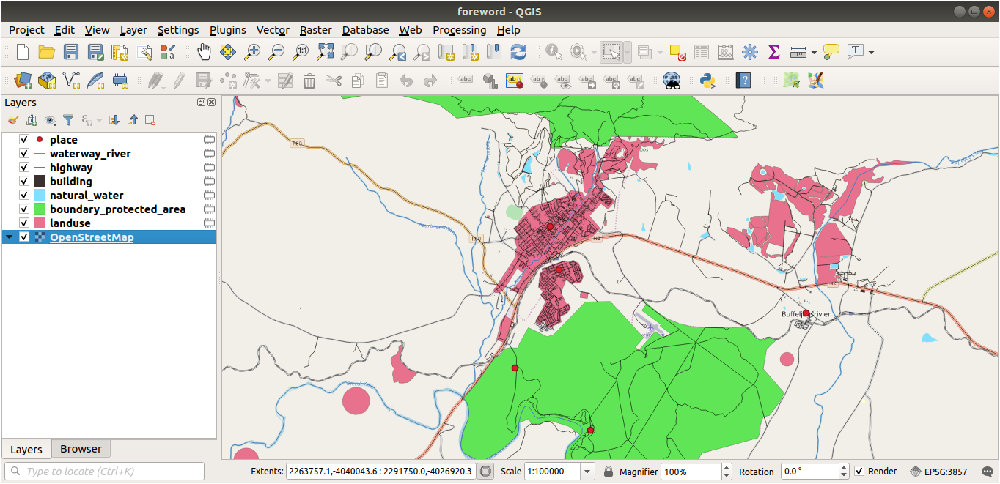

This process is intended for course conveners, or more experienced
QGIS users who wish to create localised sample data sets for their course.
Default data sets are provided with the Training Manual, but you may follow
these instructions if you wish to replace the default data sets.
The sample data provided with the Training Manual
refers to the town of Swellendam and its surroundings. Swellendam is
located about 2 hours’ east of Cape Town in the Western Cape of South Africa.
The dataset contains feature names in both English and Afrikaans.
Anyone can use this dataset without difficulty, but you may prefer to use data
from your own country or home town. If you choose to do so, your localised
data will be used in all lessons from Module 3 to Module 7.2. Later modules use
more complex data sources which may or may not be available for your region.
Note
These instructions assume you have a good knowledge of QGIS and are
not intended to be used as teaching material.
If you wish to replace the default data set with localised data for your course,
this can easily be done with tools built into QGIS. The region you choose to use
should have a good mix of urban and rural areas, containing roads of differing
significance, area boundaries (such as nature reserves or farms) and surface
water, such as streams and rivers.
Open a new QGIS project
Select Layer ► Data Source Manager to open the
Data Source Manager dialog
In the Browser tab, expand the XYZ Tiles drop-down menu
and double-click the OpenStreetMap item.
A map of the world is now visible on the map canvas.
Close the Data Source Manager dialog
Move to the area you’d like to use as study area
Now that we have the area we’ll extract the data from, let’s enable the extraction
tools.
Go to Plugins ► Manage/Install Plugins…
In the All tab, type QuickOSM in the search box
Select the QuickOSM plugin, press Install Plugin and then Close
the dialog.
Execute the new plugin from Vector ► QuickOSM ► QuickOSM… menu
In the Quick query tab, select building in the Key
drop-down menu
Leave the Value field empty, meaning that you are querying all
buildings.
Select Canvas Extent in the next drop-down menu
Expand the Advanced group below and uncheck all
geometry types on the right except Multipolygons.
Press Run query
A new building layer is added to the Layers panel, showing
buildings in the selected extent.
Proceed as above to extract other data:
Key=landuse and Multipolygons geometry type.
Key=boundary, Value=protected_area and Multipolygons
geometry type.
Key=natural, Value=water and Multipolygons geometry type.
Key=highway and check Lines and Multilines geometry types.
Key=waterway, Value=river and check Lines and Multilines
geometry types.
Key=place and Points geometry type.
This process adds the layers as temporary files (indicated by the
icon next to their name).

You can sample the data your region contains in order to see what kind of
results your region will yield.
We now need to save the resulting data to use during your
course. We’ll be using ESRI Shapefile, GeoPackage and SpatiaLite formats
depending on the data.
To convert the place temporary layer to another format:
Click the icon next to the place layer
to open the Save Scratch Layer dialog.
Note
If you need to change any of the temporary layer’s properties (CRS, extent,
fields…), use the Export
► Save Features as… contextual menu instead, and ensure the Add
saved file to map option is checked. This adds a new layer.
Select the ESRI Shapefile format
Use the … button to browse to the exercise_data/shapefile/
folder and save the file as places.shp.
Press OK
In the Layers panel, the temporary place layer is
replaced with the saved places shapefile layer and
the temporary icon next to it removed.
Double-click the layer to open its Layer Properties ►
Source tab and update the Layer name property to match the file
name.
Repeat the process for other layers, renaming them as follows:
natural_water into water
waterway_river into rivers
boundary_protected_area into protected_areas
Each resulting data set should be saved in the exercise_data/shapefile/
directory.
The next step is to create a GeoPackage file from the building layer
to use during the course:
Click the icon next to the building layer
Select the GeoPackage format
Save the file as training_data.gpkg under the exercise_data/
folder
By default, the Layer name is filled as the file name.
Replace it with buildings.
Press OK
Rename the layer in its properties dialog
Repeat the process with the highway layer, saving it as roads in
the same GeoPackage database.
The last step is to save the remaining temporary file as a SpatiaLite file.
Click the icon next to the landuse layer
Select the SpatiaLite format
Save the file as landuse.sqlite under the exercise_data/
folder. By default, the Layer name is filled as the file name.
Do not change it.
Press OK
You should now have a map which looks something like this (the symbology will
certainly be very different, because QGIS randomly assigns colors when layers
are added to the map):
The important thing is that you have 7 vector layers matching those
shown above and that all those layers have some data.
You’ll need images which cover the entire region you have chosen to use.
To find the extent coordinates, in QGIS , zoom to the extent of
the largest layer and pick the values in the Extents
box of the status bar.
Keep the GeoTiff format. Once the form is filled, click on the
Click here to Begin Search >> button and download the file(s).
Once you have downloaded the required file(s), they should be saved in the
exercise_data directory, under raster/SRTM subfolders.
Having created your localized dataset, the final step is to replace the tokens
in the substitutions.txt file so that the appropriate names will appear
in your localized version of the Training Manual.
The tokens you need to replace are as follows:
majorUrbanName: this defaults to “Swellendam”. Replace with the name of
the major town in your region.
schoolAreaType1: this defaults to “athletics field”. Replace with the
name of the largest school area type in your region.
largeLandUseArea: this defaults to “Bontebok National Park”. Replace
with the name of a large landuse polygon in your region.
srtmFileName: this defaults to srtm_41_19.tif. Replace this
with the filename of your SRTM DEM file.
localCRS: this defaults to WGS84/UTM34S. You should replace
this with the correct CRS for your region.
{kind=link}
{kind=link}
 icon next to their name).
icon next to their name).


 zoom to the extent of
the largest layer and pick the values in the
zoom to the extent of
the largest layer and pick the values in the  Extents
box of the status bar.
Keep the
Extents
box of the status bar.
Keep the